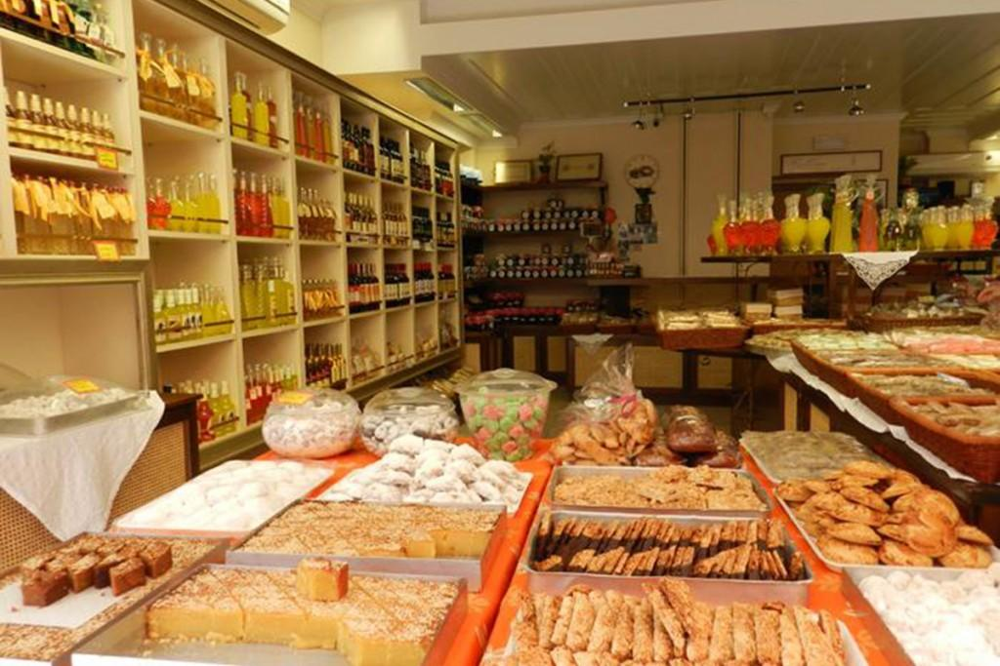
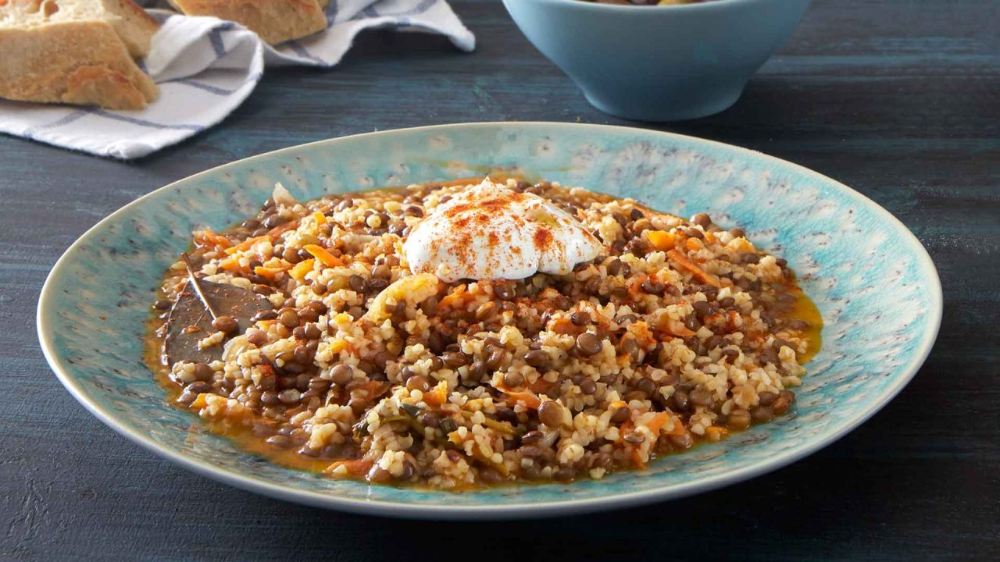
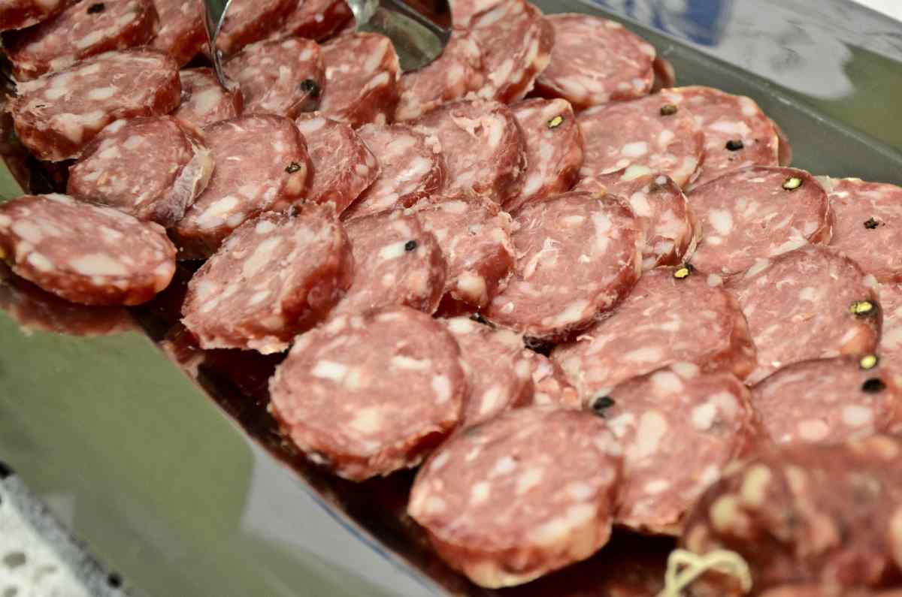
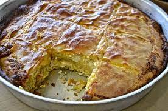

ΤΟΠΙΚΕΣ ΝΟΣΤΙΜΙΕΣ
Το προφίλ της Λευκάδας δεν περιορίζεται σε αυτό ενός διάσημου τουριστικού προορισμού δίπλα στη θάλασσα. Είναι, παράλληλα, κι ένα νησί με σημαντική ντόπια παραγωγή και εκλεκτά τοπικά προϊόντα, άκρως γευστικά. Έτσι, κάθε επισκέπτης αξίζει να έχει μερικά από αυτά στις αποσκευές του φεύγοντας.
Αγνές πρώτες ύλες, παρθένο ελαιόλαδο από τα λιόφυτα της ενδοχώρας, θυμαρίσιο μέλι, γλυκόπιοτο κρασί (η σπάνια ποικιλία «βερτζαμί» θεωρείται από τις καλύτερες της χώρας) και όλα τα καλούδια του βουνού και της θάλασσας συνθέτουν ένα γαστρονομικό μωσαϊκό.
Τα τοπικά προϊόντα που αποτελούν σήμα κατατεθέν της λευκαδίτικης κουζίνας είναι οι πολυβραβευμένες και πεντανόστιμες φακές Εγκλουβής, σπάνια ποικιλία που ευδοκιμεί στο ομώνυμο παραδοσιακό χωριό, το φημισμένο σαλάμι αέρος με ελαφρύ άρωμα σκόρδου και ολόκληρους κόκκους πιπεριού και το εξαιρετικό, αλλά δυσεύρετο, δυστυχώς, αυγοτάραχο που παράγεται στο ιβάρι της λιμνοθάλασσας.
Οι Λευκαδίτισσες νοικοκυρές, ανάλογα με την εποχή, ετοιμάζουν χειροποίητες πίτες: λαχανόπιτα με άγρια μυρωδάτα χόρτα, ρυζόπιτα, γλυκιά κολοκυθόπιτα, μακαρονόπιτα, μπριάνι (πίτα από μεγάλα πράσινα κολοκύθια) και οπωσδήποτε λαδόπιτα, την παραδοσιακή ντόπια βασιλόπιτα που κόβουν την Πρωτοχρονιά.
|

Φακές Εγκλουβής |

Σαλάμι Αέρος |

Λαδόπιτα |
Αγαπημένα όσο και «ιδιαίτερα» πιάτα είναι παστός μπακαλιάρος μαγειρεμένος στην κατσαρόλα με πατάτες και κρεμμύδια, σουπιές με μαύρο πιλάφι, γλυκόξινο σοφιγάδο (μοσχαράκι με κυδώνια και πετιμέζι), κοκοτός (κόκορας) ή βοδινό με χοντρό μακαρόνι και πλούσια αρωματική σάλτσα, ψάρι «σαβόρο» με μπόλικο δενδρολίβανο και φυσικά φακές συνοδευόμενες από «ριγανάδα», ξερό ψωμί νοτισμένο με λαδόξιδο, ρίγανη και αλάτι.
Από τις «γλυκές αμαρτίες» ξεχωρίζουν τα παστέλια και τα μαντολάτα, η σουμάδα (αναψυκτικό από πικραμύγδαλο) και τα ντόπια λικέρ, όπως το ροζολί με κανέλα και πορτοκάλι, η μέντα και το τριαντάφυλλο.